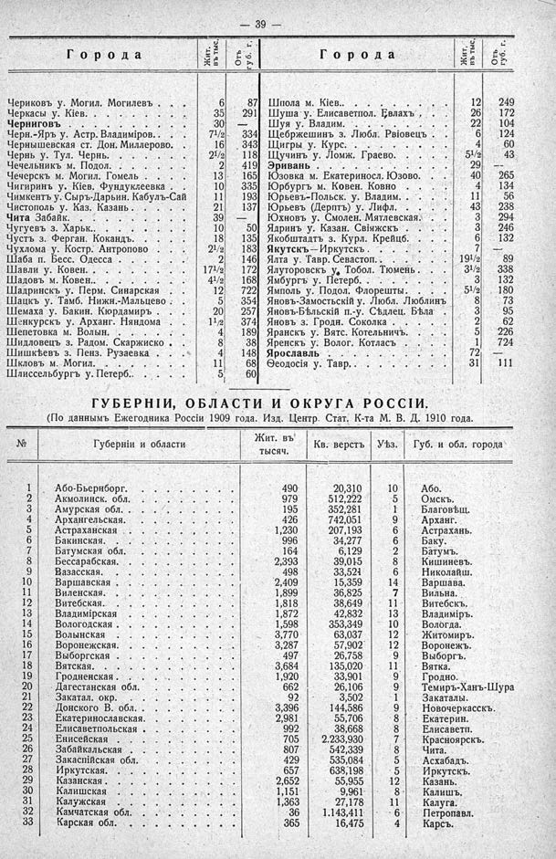

Лист источника 85
Скан

Распознанный текст
39 —
Города Жит. въ тыс. Отъ губ. г.
Чериковъ у. Могил. Могилевъ . . . . 6 87
Черкасы у. Кіев. . . . . . . . . 35 291
Черниговъ . . . . . . . . . . 30 —
Черн.-Яръ у. Астр. Владиміров. . . . 71/2 334
Чернышевская ст. Дон. Миллерово. . 16 343
Чернь у. Тул. Чернь. . . . . . . . 21/2 118
Чечельникъ м. Подол. . . . . . . 2 419
Чечерскъ м. Могил. Гомель . . . . 13 165
Чигиринъ у. Кіев. Фундуклеевка . . 10 335
Чимкентъ у. Сыръ-Дарьин. Кабулъ-Сай 11 193
Чистополь у. Каз. Казань . . . . . 21 137
Чита Забайк. . . . . . . . . . 39 —
Чугуевъ з. Харьк.. . . . . . . . 10 50
Чустъ з. Ферган. Кокандъ. . . . . 18 135
Чухлома у. Костр. Антропово . . . 21/2 183
Шаба п. Бесс. Одесса . . . . . . 2 146
Шавли у. Ковен. . . . . . . . . 171/2 172
Шадовъ м. Ковен.. . . . . . . . 41/2 168
Шадринскъ у. Перм. Синарская . . 12 722
Шацкъ у. Тамб. Нижн.-Мальцево . . 5 354
Шемаха у. Бакин. Кюрдамиръ . . . 20 257
Шенкурскъ у. Арханг. Няндома . . 11/2 374
Шепетовка м. Волын. . . . . . . 4 189
Шидловецъ з. Радом. Скаржиско . . 8 38
Шишкѣевъ з. Пенз. Рузаевка . . . 4 148
Шкловъ м. Могил. . . . . . . . 11 68
Шлиссельбургъ у. Петерб.. . . . . 5 60
Города Жит. въ тыс. Отъ губ. г.
Шпола м. Кіев.. . . . . . . . . 12 249
Шуша у. Елисаветпол. Евлахъ . . . 26 172
Шуя у. Владим. . . . . . . . . 22 104
Щебржешинъ з. Любл. Рвіовецъ . . 6 124
Щигры у. Курс. . . . . . . . . 4 60
Щучинъ у. Ломж. Граево. . . . . 51/2 43
Эривань . . . . . . . . . . 29 —
Юзовка м. Екатериносл. Юзово. . . 40 265
Юрбургъ м. Ковен. Ковно . . . . 4 134
Юрьевъ-Польск. у. Владим. . . . . 11 56
Юрьевъ (Дерптъ) у. Лифл. . . . . 43 238
Юхновъ у. Смолен. Мятлевская. . 3 294
Ядринъ у. Казан. Свіяжскъ . . . . 3 246
Якобштадтъ з. Курл. Крейцб. . . . 6 132
Якутскъ—Иркутскъ . . . . . . 7 —
Ялта у. Тавр. Севастоп. . . . . . 191/2 89
Ялуторовскъ у. Тобол. Тюмень . . 31/2 338
Ямбургъ у. Петерб. . . . . . . . 3 132
Ямполь у. Подол. Флорешты. . . . 51/2 180
Яновъ-Замостьскій у. Любл. Люблинъ 8 73
Яновъ-Бѣльскій п.-у. Сѣдлец. Бѣла 3 95
Яновъ з. Гродн. Соколка . . . . 2 62
Яранскъ у. Вятс. Котельничъ. . . 5 226
Яренскъ у. Волог. Котласъ . . . 1 724
Ярославль . . . . . . . . . 72 —
Ѳеодосія у. Тавр. . . . . . . . 31 111
ГУБЕРНІИ, ОБЛАСТИ И ОКРУГА РОССІИ.
(По даннымъ Ежегодника Россіи 1909 года. Изд. Центр. Стат. К-та М. В. Д. 1910 года.
№ Губерніи и области Жит. въ тысяч. Кв. верстъ Уѣз. Губ. и обл. города
1 Або-Бьернборг. . . . . . . . . . 490 20,310 10 Або.
2 Акмолинск. обл. . . . . . . . . . 979 512,222 5 Омскъ.
3 Амурская обл. . . . . . . . . . 195 352,281 1 Благовѣщ.
4 Архангельская. . . . . . . . . . 426 742,051 9 Арханг.
5 Астраханская . . . . . . . . . . 1,230 207,193 6 Астрахань.
6 Бакинская. . . . . . . . . . . 996 34,277 6 Баку.
7 Батумская обл. . . . . . . . . . 164 6,129 2 Батумъ.
8 Бессарабская. . . . . . . . . . 2,393 39,015 8 Кишиневъ.
9 Вазасская. . . . . . . . . . . 498 33,521 6 Николайш.
10 Варшавская . . . . . . . . . . 2,409 15,359 14 Варшава.
11 Виленская. . . . . . . . . . . 1,899 36,825 7 Вильна.
12 Витебская. . . . . . . . . . . 1,818 38,649 11 Витебскъ.
13 Владимірская . . . . . . . . . . 1,872 42,832 13 Владиміръ.
14 Вологодская . . . . . . . . . . 1,598 353,349 10 Вологда.
15 Волынская . . . . . . . . . . 3,770 63,037 12 Житомиръ.
16 Воронежская. . . . . . . . . . 3,287 57,902 12 Воронежъ.
17 Выборгская . . . . . . . . . . 497 26,758 9 Выборгъ.
18 Вятская. . . . . . . . . . . . 3,684 135,020 11 Вятка.
19 Гродненская . . . . . . . . . . 1,920 33,901 9 Гродно.
20 Дагестанская обл. . . . . . . . . 662 26,106 9 Темиръ-Ханъ-Шура
21 Закатал. окр. . . . . . . . . . 92 3,502 1 Закаталы.
22 Донского В. обл. . . . . . . . . 3,396 144,586 9 Новочеркасскъ.
23 Екатеринославская. . . . . . . . 2,981 55,706 8 Екатерин.
24 Елисаветпольская . . . . . . . . 992 38,668 8 Елисаветп.
25 Енисейская . . . . . . . . . . 705 2.233,930 7 Красноярскъ.
26 Забайкальская . . . . . . . . . 807 542,339 8 Чита.
27 Закаспійская обл. . . . . . . . . 429 535,084 5 Асхабадъ.
28 Иркутская. . . . . . . . . . . 657 638,198 5 Иркутскъ.
29 Казанская . . . . . . . . . . . 2,652 55,955 12 Казань.
30 Калишская . . . . . . . . . . 1,151 9,961 8 Калишъ.
31 Калужская . . . . . . . . . . 1,363 27,178 11 Калуга.
32 Камчатская обл. . . . . . . . . 36 1.143,411 6 Петропавл.
33 Карская обл. . . . . . . . . . 365 16,475 4 Карсъ.